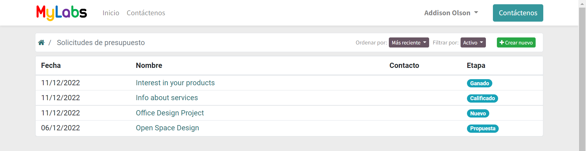
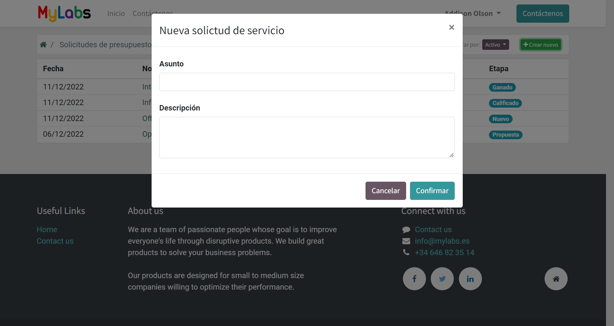
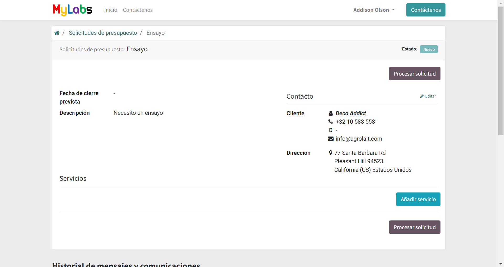
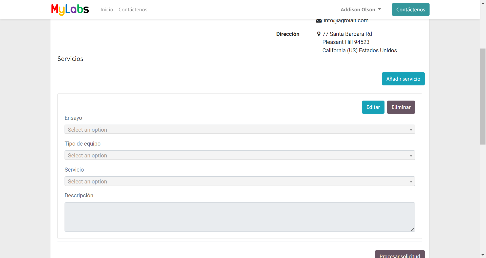
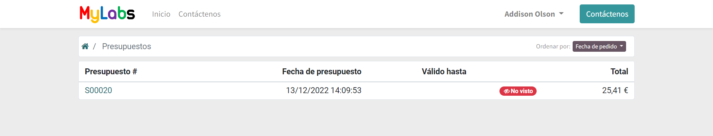
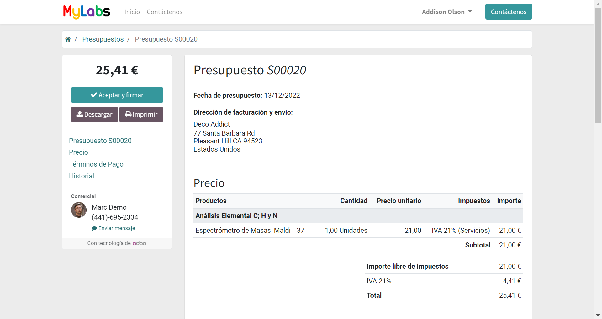
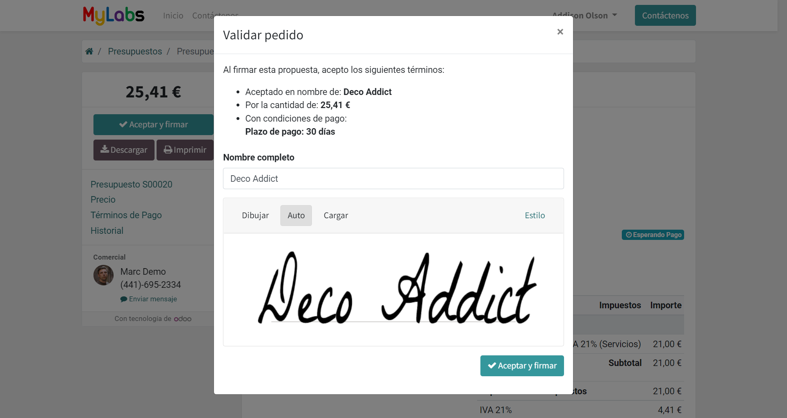
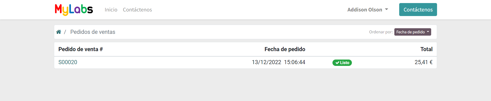
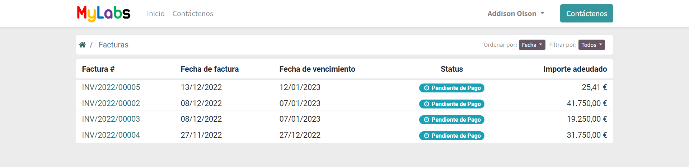
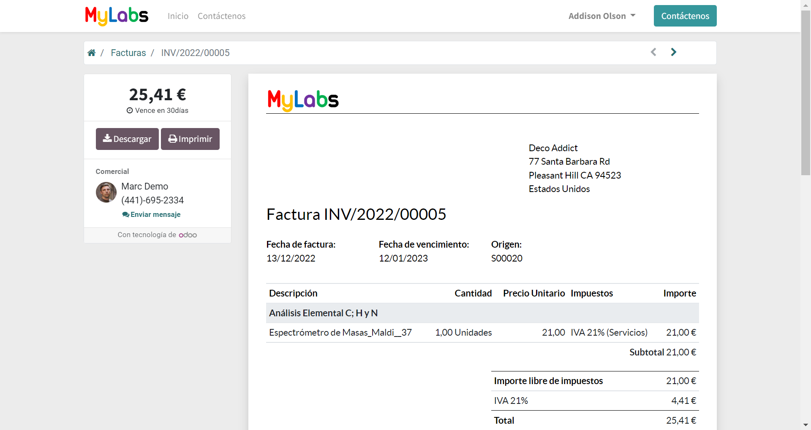

Sección de cliente¶
La sección de clientes contiene los documentos en los que el usuario es el cliente y solicita servicios.
El flujo de trabajo esperado para los clientes se compone de los siguientes pasos:
El cliente realiza una Solicitud de presupuesto indicando qué pruebas, servicios y/o equipos necesita.
El equipo de MyLabs utiliza un algoritmo para seleccionar el equipo más adecuado para realizar los servicios. Enviar la propuesta de realización de los servicios a las universidades o laboratorios seleccionados. Una vez que las universidades y laboratorios confirman la disponibilidad para realizar los servicios, el equipo de MyLabs envía una cotización al cliente.
El cliente debe revisar y aceptar el presupuesto para generar el pedido.
El equipo de MyLabs notifica a las universidades y laboratorios la aceptación de los servicios para iniciar los experimentos. Una vez realizadas las pruebas, se envían los informes al cliente. También se genera y envía la factura del servicio.
El cliente deberá revisar la factura y realizar el pago según el método elegido.
Solicitud de presupuestos¶
En esta sección se muestra la solicitud de presupuesto que el cliente ha enviado.
Puede mostrar los detalles o realizar una solicitud de presupuesto indicando qué pruebas y/o servicios necesita. Haga clic en Crear nuevo para realizar una nueva solicitud de presupuesto.
Indique un título y una descripción de los servicios que necesita y confirme.
Puede ver los detalles de la solicitud de presupuesto y el estado de la solicitud. Puede ser más específico en su solicitud agregando más información sobre el servicio que necesita. Haga clic en Agregar servicio para agregar una nueva línea de servicio. Haga clic en Editar y Eliminar para editar o eliminar una línea de servicio.
Una vez que la línea de servicio está en modo de edición, puede especificar la prueba, el servicio y el equipo que necesita. No es obligatorio completar todos los campos, pero cuanto más específica sea la solicitud, más fácil será para el equipo de MyLabs generar la cotización. Cada uno de los campos Test ,:guilabel:Tipo de Equipo y Servicio de Equipo se filtran dinámicamente en función del valor de los demás campos. Por lo tanto, si selecciona un Ensayo, los campos Tipo de Equipo y Servicio de Equipo se filtrarán para mostrar solo el Tipo de Equipo y el Servicio de Equipo que están relacionados con el Ensayo seleccionado.
Haga clic en Guardar y Cancelar para guardar o cancelar los cambios en la línea de servicio.
Una vez que haya terminado, haga clic en Tramitar solicitud para enviar la solicitud de presupuesto al equipo de MyLabs. La solicitud ya no se podrá editar.
También puedes escribir cualquier comentario, adjuntar cualquier documento y leer las respuestas del equipo de MyLabs en la sección Historial de mensajes y comunicaciones.
Presupuestos¶
Esta sección muestra los presupuesto que le ha enviado el equipo de MyLabs.
Puede hacer clic en un documento para mostrar los detalles del presupuesto.
Puede ver los detalles y el estado del presupuesto. Haga clic en Aceptar y firmar para aceptar el presupuesto y generar el pedido. Puede descargar el presupuesto en formato pdf e imprimirlo. Escribe cualquier comentario al equipo de MyLabs y adjunta cualquier documento en la sección Historial de mensajes y comunicaciones.
Cuando se acepta el presupuesto, se genera el pedido.
Pedidos de ventas¶
En esta sección se muestran los pedidos que el cliente ha generado aceptando las cotizaciones.
Puede hacer clic en un documento para mostrar los detalles del pedido. Cuando se haya completado el servicio, el pedido se marcará como realizado y el equipo de MyLabs le enviará el informe final. También se generará y enviará la factura del servicio.
Facturas¶
En esta sección se muestran las facturas que le ha enviado el equipo de MyLabs y su estado.
Puede hacer clic en un documento para mostrar los detalles de la factura y descargarlo en formato pdf.
